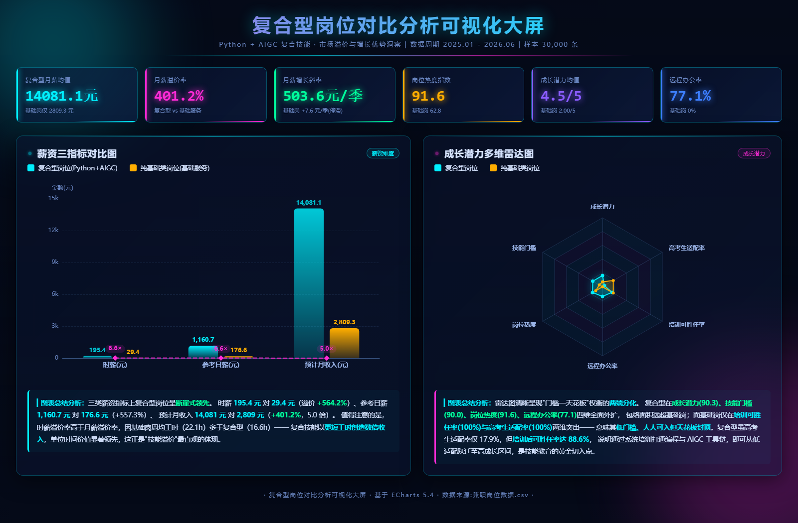
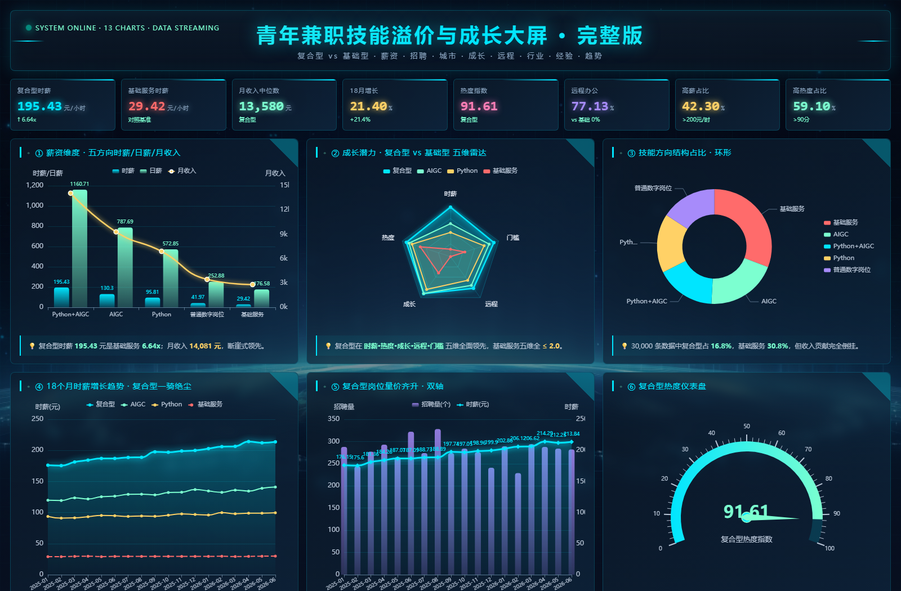

想回答一个很具体的问题：同时会 Python 和 AIGC 的岗位，比只会一个到底值钱多少。 「更值钱」靠感觉说不清，也没法拿给别人看 —— 于是把 30,000 行数据按技能方向切开， 逐组算均值，让数字自己说话。结论比预想的更有意思：复合不是 1+1，它比单技能里最强的那一个还高 50%。
数据性质 = 模拟演示数据、薪资口径说明 = 按技能稀缺度、城市和时间趋势生成，非真实招聘报价。
所以下面所有数字只在这份数据集内成立，不代表真实市场行情 ——
这个项目真正交付的是一套能被追问的分析口径和可视化链路，不是一份薪资调查报告。
点左边任意一条切换；条长按时薪归一化到最高值。「基础服务」那条几乎贴地，不是画错了 —— 29.4 元对 195.4 元，本来就该这么短。
这三根柱子用的是同一列（时薪_元）的组内均值，除了分组条件不同，没有任何额外处理。
点图例可以单独看某一条。复合型 18 个月涨了 22.7%，基础服务涨 1.9% —— 两条线的夹角就是「成长斜率差」。
上面每一个数都由 pandas.groupby 现算，没有任何一个是我对着感觉填的。

打开 ↗KPI 条给结论，柱状图给绝对量，雷达图给结构 —— 一张图只能说一个数，三个视角才说得清结构。

打开 ↗基础版回答「差多少」，扩展版回答「为什么差」：薪资五方向对比、成长潜力五维、18 个月趋势、岗位量与时薪双轴。
两张都不是截图 —— 点开就是活的 ECharts 页面，能悬停看数值、图例能开关。深色是当时的风格，跟现在这个浅色站点不是一套，所以收在子页面里，不占正文。
CSV 自身带 数据性质 和 薪资口径说明 两个字段，明写「模拟演示数据 / 非真实招聘报价」。 我在页面上把这个声明放在结论之前，而不是放到最后一行小字里 —— 因为一旦读者以为这是真实行情， 后面所有精确到小数点的溢价率都会变成误导。
「复合岗时薪是基础服务的 6.6 倍」听起来很响，但它只是两个极端组之差。 真正有解释力的是同一句里的另一半：复合岗比单技能最强的 AIGC 还高 50% —— 那个才是「复合」本身的价值， 因为它的对照物里已经排掉了「数字类岗位本来就比体力岗贵」这个因素。
数据能说明「带这两个技能的岗位，标的薪资更高」，不能说明「学了这两样就一定能拿到那个数」。 薪资是岗位定价，不是个人能力价格 —— 中间还隔着经验、城市、公司、谈判。这条我没法用数据证明，所以只能明写。
技能方向 这个字段天然给了分组依据：
基础服务 / 普通数字岗位 / Python / AIGC / Python+AIGC。不自己造标签，用数据自带的。时薪_元、参考日薪_元、预计月收入_元 的均值，
外加 每周工时、远程办公 占比、成长潜力_1至5、技能门槛_1至5、岗位热度指数。时薪 和 月薪 的溢价率不同（564.2% vs 401.2%），因为基础岗周均工时更长（22.1h vs 16.6h）。年月 分组求月薪均值，18 个点做一元线性拟合取斜率，单位换算成「元/季」便于阅读。整个页面的结论支点就是这三个数；其余图表都是围绕它们做交叉验证。
斜率用的是全 18 个点的最小二乘拟合，不是「末月减首月」——后者对端点噪声太敏感。
数据集的模拟属性写到了页面最显眼处，不是藏在角落。结论带着边界一起说，才经得起追问。
拿复合岗比基础服务，结论是「6.6 倍」，听着很响但没什么信息量； 拿它比单技能的 AIGC，才看得到「复合本身」到底值多少 —— 分母决定了这句话有没有意义。
每张图都要能回答一个具体问题。KPI 给数值、柱状给绝对量、雷达给结构、折线给趋势 —— 四张图说四件事，而不是把同一个数画四遍。
3 万行不适合塞进浏览器。均值、斜率、占比全在 Python 端算完，前端拿的是一张已经算好的小表。